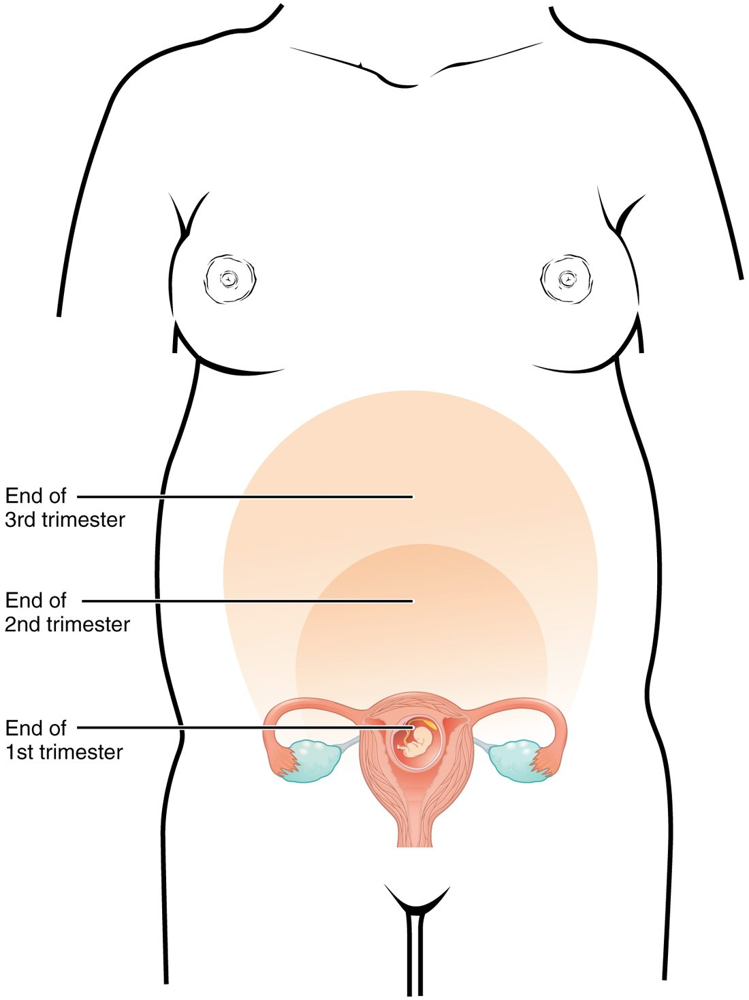
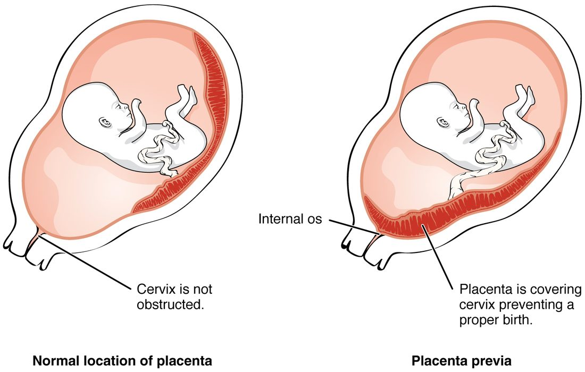

Pregnancy changes almost every system of the mother's body, and most of the changes follow from a few causes: hormones from the placenta, a growing uterus, and a fetus that draws on the mother's blood. This page explains the physiological changes in pregnancy system by system, from a cardiac output that rises by nearly half to breathing that lowers the mother's carbon dioxide, and then the main complications of pregnancy: implantation outside the uterus, a placenta over the cervix, preeclampsia and gestational diabetes. Weeks are given on the clinical count, from the first day of the last menstrual period; a full-term pregnancy is about 40 weeks.
Where the changes come from
Keep three drivers in mind. Almost every change below traces back to one of them:
- Placental hormones. Progesterone relaxes smooth muscle throughout the body, in blood vessels, the gut, the ureters and the uterus. Estrogens grow the uterus and breasts and make the liver make more of many proteins. Human placental lactogen makes the mother's cells less responsive to insulin.
- The growing uterus. It presses on the organs, veins and diaphragm around it.
- The fetus and placenta. They take oxygen, glucose, amino acids, calcium and iron from the mother's blood, and the placenta is a large, low-resistance vascular bed added to her circulation.
The uterus and breasts
The uterus grows from about 60 g before pregnancy to about 1,000 g at term, and its cavity from a few milliliters to about 5 liters. Most of that growth comes from each smooth muscle fiber growing much longer and wider, with some added by division, as you saw with muscle tissue.
Figure 1 shows how the top of the uterus, the fundus, rises: it is just above the pubic symphysis at about week 12, near the navel at about week 20, and close to the bottom of the sternum at about week 36. Between weeks 20 and 36, the distance in centimeters from the pubic symphysis to the fundus roughly equals the number of weeks. A measurement well below that suggests a fetus growing too slowly or too little amniotic fluid.

The cervix softens, and a thick plug of mucus seals its canal. The breasts enlarge from early pregnancy: estrogens grow the ducts, and progesterone grows the milk-making alveoli. Prolactin rises about tenfold. From mid-pregnancy the breasts can make a small amount of early milk, but high progesterone holds back full milk production until after delivery.
Blood volume and blood
A woman's blood volume rises by about 40 to 50%, about 1.5 liters, starting in the first weeks and peaking around weeks 32 to 34. The chain behind it:
- Progesterone, nitric oxide and other signals relax the smooth muscle of arterioles, and the placenta adds a low-resistance bed, so total peripheral resistance falls.
- The body senses the circulation as underfilled, and the renin–angiotensin–aldosterone system is switched on.
- Aldosterone makes the kidneys keep more sodium, and water follows it, so plasma volume rises.
- The thresholds for thirst and ADH release are reset lower, so the plasma is held at an osmolality about 10 mOsm/kg lower than before pregnancy.
Red cell mass also rises, driven by erythropoietin, but only by about 20 to 30%. Plasma rises more than red cells, so the hematocrit and the hemoglobin concentration fall even though the body has more red cells than before. This is dilutional anemia of pregnancy, and it is normal: a hemoglobin down to about 11 g/dL is expected. A lower value usually means true anemia, most often from too little iron, because the fetus and the extra red cells take about 1 g of iron over a pregnancy.
The blood also clots more readily. The liver makes more fibrinogen and several clotting factors, and levels of a natural anticoagulant protein fall. Together with slower flow in the leg veins, this makes a clot in a deep vein several times more likely than outside pregnancy, and the risk is highest in the weeks after delivery. The change limits blood loss at delivery.
The heart and blood pressure
Cardiac output rises by about 30 to 50%, from about 4.5 to 5 L/min to about 6.5 to 7 L/min. Most of the rise has happened by about week 20 to 24:
- Heart rate rises first, within the first weeks, and ends up about 10 to 20 beats per minute higher, more so later in pregnancy.
- Stroke volume rises a few weeks later, as the larger blood volume raises venous return and preload.
Blood pressure does not rise with it, because total peripheral resistance falls by about a quarter to a third. Blood pressure dips in the middle of pregnancy, the diastolic pressure most, and returns to its usual level near term. The worked example shows why the two changes nearly cancel.
Worked example: cardiac output and blood pressure in pregnancy
Problem. Before pregnancy, a woman has a heart rate of 70 beats/min, a stroke volume of 70 mL and a mean arterial pressure of 90 mm Hg. At 28 weeks her heart rate is 85 beats/min and her stroke volume 80 mL, and her total peripheral resistance has fallen by 30%. Find her cardiac output before and during pregnancy, and estimate her new mean arterial pressure.
- Cardiac output before. CO = HR × SV = 70 × 70 mL = 4,900 mL/min = 4.9 L/min.
- Cardiac output at 28 weeks. CO = 85 × 80 mL = 6,800 mL/min = 6.8 L/min.
- Size of the rise. 6.8 ÷ 4.9 = 1.388, about a 39% rise.
- Write the pressure rule. Mean arterial pressure = cardiac output × total peripheral resistance, so the new MAP = old MAP × (CO ratio) × (resistance ratio).
- Resistance ratio. A 30% fall leaves 0.70 of the old resistance.
- Substitute. New MAP = 90 × 1.388 × 0.70 = 90 × 0.972 = 87.4 mm Hg.
Answer. Cardiac output rises from 4.9 to 6.8 L/min, but mean arterial pressure falls slightly, to about 87 mm Hg, because the fall in resistance slightly outweighs the rise in output.
Where the extra output goes: the uterus and placenta take up to about 700 mL/min at term, the kidneys about 400 mL/min more than before, and the skin more too, which is why pregnant women often feel warm.
Lying flat on the back. From about week 20, the heavy uterus can press on the inferior vena cava when the woman lies on her back. Venous return falls, preload and stroke volume fall, and cardiac output and blood pressure drop. She may feel dizzy, sweaty and nauseated, and blood flow to the placenta falls. Turning onto her left side lifts the uterus off the vein. That is why pregnant women are advised to rest on their side, and why a pregnant patient on a stretcher is tilted to the left.
The same pressure on the pelvic veins raises venous pressure in the legs, which adds to swelling of the ankles, varicose veins and hemorrhoids. Mild ankle swelling late in pregnancy is common and normal. A soft murmur from the faster, larger flow is also common.
Breathing
The growing uterus pushes the diaphragm up by about 4 cm, but the lower ribs flare outward, so the chest widens. The changes in the lung volumes you met:
- Tidal volume rises by about 30 to 50%, while breathing rate barely changes. Minute ventilation therefore rises by about 40 to 50%.
- Functional residual capacity falls by about 20%, because the raised diaphragm lowers the expiratory reserve volume and the residual volume.
- Vital capacity stays about the same.
Oxygen use rises by only about 20 to 30%, so ventilation rises more than metabolism needs. The cause is progesterone, which makes the brainstem's chemoreceptors more sensitive to carbon dioxide. The results:
- The mother breathes off more carbon dioxide, and her PaCO2 falls from about 40 to about 30 mm Hg.
- That is a mild respiratory alkalosis. The kidneys compensate by excreting more bicarbonate, which falls to about 18 to 22 mEq/L, so her pH stays near 7.40 to 7.45.
- With the mother's PaCO2 lower, the carbon dioxide gradient from fetal to maternal blood across the placenta is steeper, so the fetus unloads carbon dioxide more easily.
Many healthy pregnant women feel short of breath, often early in pregnancy, before the uterus is large; the extra drive to breathe, not a lung problem, is the usual cause. The smaller functional residual capacity also means a pregnant woman has less oxygen in reserve and her blood oxygen falls faster if she stops breathing, which matters in an emergency.
Kidneys and urinary tract
- More filtering. Renal plasma flow rises by 50 to 80%, and glomerular filtration rate by about 50%, reaching its high point early, by the end of the first trimester. Creatinine is cleared faster, so serum creatinine falls; a value that would be normal outside pregnancy can mean kidney trouble in a pregnant woman.
- Glucose in the urine. The higher GFR delivers more glucose to the tubules, and a small amount can spill into the urine even with normal blood glucose.
- Wider ureters. Progesterone relaxes the smooth muscle of the ureters, and the uterus presses on them, more on the right. Urine flows more slowly, so bacteria that enter the bladder can climb to the kidney more easily. Urinary infections are treated promptly in pregnancy for that reason.
- Frequency. The uterus presses on the bladder, early and again late in pregnancy.
Digestion
- Nausea and vomiting affect most women in early pregnancy, peaking around weeks 9 to 12, when hCG peaks. A hormone from the placenta that acts on the brainstem's vomiting area, GDF15, is now thought to be a main driver. The severe form, with weight loss and dehydration, is called hyperemesis gravidarum.
- Heartburn. Progesterone relaxes the lower esophageal sphincter, and the uterus pushes up on the stomach, so acid refluxes more easily.
- Constipation. Progesterone slows movement through the gut, and more water is absorbed from the slower-moving contents.
- Gallstones. The gallbladder empties more slowly and estrogen makes bile richer in cholesterol, so gallstones form more easily.
Metabolism and the endocrine glands
Energy needs rise little in the first trimester and by about 340 kcal a day in the second and 450 in the third. Metabolism shifts over the pregnancy:
- First half: storing. The mother stores fat.
- Second half: sparing glucose for the fetus. Human placental lactogen, progesterone, cortisol and a placental growth hormone make the mother's cells less responsive to insulin. After a meal her glucose rises higher and stays up longer, and she burns more fat, leaving more glucose to cross to the fetus. Her pancreatic beta cells multiply and secrete two to three times more insulin to compensate.
- Between meals, the opposite. The fetus draws glucose from her blood constantly, so her fasting glucose is lower than before pregnancy, and after an overnight fast she starts making ketone bodies sooner.
Other glands respond too. The pituitary enlarges as its prolactin cells multiply. hCG, whose structure resembles TSH, weakly stimulates the thyroid in early pregnancy, so TSH falls a little; estrogen raises the protein that carries thyroid hormones in the blood. Iodine needs rise. The absorption of calcium from the gut about doubles, as calcitriol rises, which supplies most of the roughly 30 g of calcium the fetus builds into its skeleton.
Skin, joints and weight
- Darker skin. Estrogens and progesterone stimulate melanocytes. The areolae darken, a dark line appears down the middle of the abdomen from the navel to the pubis (the linea nigra), and some women get dark patches on the face (melasma).
- Stretch marks form where the dermis is stretched fast enough to tear its collagen, on the abdomen, breasts and thighs.
- Posture. The growing uterus shifts the center of gravity forward, and the lumbar lordosis deepens to compensate, which often causes low back pain. The joints of the pelvis loosen, and the cause in humans is less clear than textbooks suggest, as you saw with relaxin.
- Weight gain. A woman who starts at a healthy weight is advised to gain about 11 to 16 kg. Only about a third of it is the baby, placenta and amniotic fluid. The rest is the larger uterus and breasts, the extra blood and extracellular fluid, and fat stores.
Complications of pregnancy
Most pregnancies go well, but some problems are common or dangerous enough that every health professional should know how they arise. The four below are the complications of pregnancy this course covers in depth; each follows from something you have already learned.
Ectopic pregnancy
An ectopic pregnancy (ec- = out of, topos = place) is one that implants outside the cavity of the uterus. More than 95% implant in a uterine tube, usually the ampulla. About 1 to 2 pregnancies in 100 are ectopic.
- Cause. The embryo must travel down the tube in its first 4 to 5 days. Anything that slows it can make the blastocyst hatch and implant in the tube wall. The most common cause is scarring of the tube from an earlier infection, such as chlamydia; earlier tube surgery, a previous ectopic pregnancy and smoking raise the risk too.
- Why it is dangerous. The tube wall is thin and cannot stretch like the uterus. As the trophoblast invades and the embryo grows, usually by about weeks 6 to 8, the tube can rupture and bleed into the abdomen. That is a leading cause of death in early pregnancy.
- Signs. A positive pregnancy test with one-sided lower abdominal pain and vaginal bleeding; on ultrasound, no pregnancy inside the uterus. hCG often rises more slowly than the usual doubling every two to three days. Rupture adds signs of shock and shoulder pain from blood irritating the diaphragm.
An ectopic pregnancy cannot develop normally. It is treated with a drug that stops the dividing trophoblast cells, or with surgery.
Placenta previa
In placenta previa (previa = going before), the placenta lies low in the uterus, over or next to the internal opening of the cervix (Figure 2). It affects about 1 pregnancy in 200 at term. The risk is higher after an earlier cesarean delivery, with several earlier pregnancies, in smokers, with IVF and in older mothers.

The typical sign is painless bright red bleeding in the second half of pregnancy. In the last months, the lower part of the uterus stretches and thins and the cervix begins to change, so the placenta, which cannot stretch with it, partly tears away from the wall and maternal vessels bleed. A digital examination of the cervix can set off heavy bleeding, so it is avoided until an ultrasound has shown where the placenta lies. A placenta that covers the cervix blocks the way out, so the baby is delivered by cesarean.
A low-lying placenta seen on an ultrasound at 20 weeks often ends up clear of the cervix by the third trimester, because the lower part of the uterus grows and carries the placenta's edge upward.
| Placenta previa | Placental abruption | |
|---|---|---|
| What it is | A placenta implanted over or near the cervix | A normally placed placenta separating from the wall before delivery |
| Pain | Usually painless | Usually painful, with a tender, hard uterus |
| Bleeding | Bright red, seen outside | Dark, and may be hidden behind the placenta |
| Common links | Earlier cesarean delivery, several earlier pregnancies | High blood pressure, trauma, cocaine, smoking |
| Risk to the fetus | Mostly from early delivery | Loss of oxygen supply as the placenta separates |
Preeclampsia
Preeclampsia (pre- = before, eklampsis = a sudden flash) is new high blood pressure after week 20 of pregnancy, 140/90 mm Hg or more on two readings, together with protein in the urine or signs that other organs are affected: few platelets, a damaged liver, failing kidneys, fluid in the lungs, or a severe headache or vision changes. It affects about 3 to 5 pregnancies in 100.
It starts in the placenta, early in pregnancy, and appears in the mother months later:
- Shallow remodeling. As in placental insufficiency, the cytotrophoblast fails to widen the spiral arteries fully, so they stay narrow and the placenta gets too little blood.
- The stressed placenta releases factors that block blood vessel growth into the mother's blood, the best known being a soluble decoy receptor protein that mops up the growth factors that keep the endothelium healthy.
- The mother's endothelium is damaged throughout her body. Her arterioles constrict, so total peripheral resistance and blood pressure rise. Her capillaries leak, so fluid moves into the tissues (edema) and her plasma volume falls. The glomerular endothelium swells, so GFR falls and protein spills into the urine. Platelets are used up on damaged endothelium, and the liver can be injured.
- The worst outcomes are seizures (eclampsia), stroke, and the HELLP syndrome: breakdown of red cells (hemolysis), raised liver enzymes and low platelets.
The only cure is delivering the placenta, so treatment balances the mother's risk against the baby's maturity. Magnesium sulfate given by vein prevents seizures, and drugs lower the blood pressure. Low-dose aspirin started before week 16 lowers the risk in women at high risk.
Gestational diabetes
Gestational diabetes is diabetes that first appears in pregnancy, usually in the second half. It affects about 6 to 9 pregnancies in 100 in the United States, more in some populations.
- Cause. Placental hormones make the mother's cells less responsive to insulin, most strongly late in pregnancy. Most women's beta cells answer with enough extra insulin. When they cannot keep up, blood glucose rises. Being overweight, older age and a family history of type 2 diabetes raise the risk.
- Effect on the fetus. Glucose crosses the placenta, but the mother's insulin does not. The fetus's glucose rises, its pancreas secretes more insulin, and fetal insulin drives growth, so the baby can grow very large, which makes the shoulders more likely to get stuck at delivery.
- After birth. Cutting the cord stops the supply of the mother's glucose, but the baby's pancreas is still secreting extra insulin, so the newborn's glucose can fall dangerously low in the first hours. It is checked soon after birth.
Women are usually screened at weeks 24 to 28 with a glucose tolerance test: a measured glucose drink followed by blood glucose checks. Treatment starts with diet and exercise; insulin is added if needed. The diabetes usually goes away after delivery, when the placenta and its hormones are gone. But about half of these women develop type 2 diabetes later in life, so they are tested again after the pregnancy and regularly after that.
Other common problems
Miscarriage, the loss of a pregnancy before about week 20, ends about 10 to 15% of recognized pregnancies, most often because of a chromosome error in the embryo. Iron-deficiency anemia, severe vomiting, and Rh disease, which you met with the blood, are other common problems, as is birth before 37 weeks.
Summary
Placental hormones, the growing uterus and the demands of the fetus drive the mother's changes. Blood volume rises 40 to 50%, plasma more than red cells, so the hematocrit falls (dilutional anemia), and the blood clots more readily. Cardiac output rises 30 to 50% through higher stroke volume and heart rate, while total peripheral resistance falls, so blood pressure dips in mid-pregnancy; lying flat can compress the inferior vena cava and lower cardiac output. Progesterone raises minute ventilation more than metabolism needs, so PaCO2 falls to about 30 mm Hg with renal compensation; functional residual capacity falls. GFR rises about 50%, serum creatinine falls and the ureters widen. Progesterone slows the gut and relaxes the lower esophageal sphincter. Insulin resistance in the second half spares glucose for the fetus. The main complications: an ectopic pregnancy implants outside the uterus, usually in a uterine tube, and can rupture; placenta previa covers the cervix and causes painless bleeding; preeclampsia is new hypertension after week 20 with organ damage, starting with poor spiral artery remodeling and ending with widespread endothelial damage; and gestational diabetes arises when beta cells cannot overcome placental insulin resistance, overfeeding the fetus with glucose.